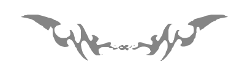

Fractured
Gunnar De Winter
Beyond synapses and neurotransmitters.
Deeper.
Beyond perceptions and sensations.
There I am.
Naked and afraid, surrounded by churning darkness, as if it was alive. I reach out, ready to break myself into pieces and become whole again.
Something yanks me away. Synaptic tyranny reasserts itself.
NO.
Nanoneedles withdraw from my scalp. Internal transcranial magnetic stimulation ends. Straps loosen around my chafed, scarred wrists. Wisps of bright light dance across the inside of my closed eyelids.
“How was the session?” Doc asks.
I look at the shiny black eye in the white wall that covers the processing core of the psych AI. “Good.” I hide my disappointment. “But unfinished.”
“You know we have a time limit,” Doc says—as it does every time. “We can’t let you lose yourself.”
But I am already lost.

First, the adventurers. Those that blindly push boundaries, even if the boundaries push back. Extroverted, oblivious to danger, hungry for recognition.
Second, the worriers. No longer “the depressed”, but the “synaptically atypical”. But good at thinking outside of the box. You have to when your box is broken.
One individual with this second profile rounds out a mission crew. Two at most. No more. Anxiety is a contagion, demons duplicate.
When they recruited me, the adventurer spots were already filled.
The rest of the crew dislikes observing the pin-pricked void, that reminder of human insignificance. They’re here for the planets, for planting flags. Not me. I relish the emptiness. It reaches out to me and lets me know that I’m real. Perhaps only the abyss allows me to congeal into something resembling a human being.
The hatch irises open behind me. Malia enters. “You alright?”
Her voice is soft. She knows I need time to adapt my senses to other people. An unreliable input filter, Doc calls it.
“Yeah,” I say. We both know it’s a lie.
She smiles cautiously, as if worried she’ll break me.
Pity. How I hate that pity.
Malia touches my arm. I know I’m not for her. How could I be? I am an empty shell with the occasional delusion of housing something meaningful.
Her touch ends. Please don’t let go. I stay silent.
“We’re almost done reverse breaking for our pitstop. Cap wants you on the bridge.” She winks. “Best prepare your swarm.”
I nod. “I’m coming.” Maybe she can save me.
Triggered by the glimmer of hope, one of the demon-selves rears its head. No one can save me.
Of course, Davalia wants to go out. Ever the impetuous one. We… tolerate each other, but the rift, the fundamental disconnect, is too large. He wants to make himself known to the universe. I want to find a dark little corner where I can remain unseen.
The captain is, well, a captain. Accomplished all-rounder. Chiseled like some kind of Greek god. Also one of the nicest people you’ll ever meet. The bastard.
Cap holds out his hands. “Calm down, Matti. Procedures are in place for a reason.” He turns to me. Suddenly the others acknowledge my presence.
Yeah, I’m here. Now stop looking at me.
“Sem, are the drones ready?” Cap smiles at me. The same smile Malia gave me earlier.
I bite back a bilious remark. “Yes, Cap. Good to go.”
I guess that’s why I’m so good with the swarm. I don’t mind fragmenting myself.
My many mini-me’s, each the size of a dinner plate, meander through the thick atmosphere of the gas giant. It feels like pulling apart darkness and letting glimpses of what hides behind shine through. Breaking the singular focus on despair is a relief.
The planet appears as a kaleidoscope of smoky greens that swirl in, over, and through each other. It is not suitable for a full-blown colony, but floater habs have been successfully deployed in similar places. We have to decide whether or not to mark this one for follow-up.
Something flickers. A cloud with an unexpected light absorption ratio. I send in the swarm, scoopers out and ready to sample the extra-terrestrial pea-souper. The scoopers scoop and transfer their contents to the sterile vials in the drones’ innards.
The absorption ratio changes again. Fast. Too fast.
Within the human visible spectrum, it looks like teal lightning.
My fingers dance in the haptic gloves as I call back the swarm. Such is protocol. Anything unusual? Regroup and analyze. The drones cluster. Closer, closer, closer. Perspectives flow into each other until one remains that makes me feel uncomfortable. Moments before I remove the AR helmet, my distributed mind collapses in on itself.
The black hole of personhood.
Please don’t look at me.
Of course, they’re all there, looking at me.
“What happened?” Cap asks. Davalia is silently fuming. I’m sure he considers the drones’ retreat as cowardice. Caution is the antithesis to his bravado.
“Something’s off,” I say. They’re leaning in, crowding me. My heartbeat thumps in my temples.
“Explain,” Cap commands.
“I’m not sure. Something changed. Too fast and specific to be a coincidence.” Cap scratches his strong, clean-shaven chin. “I’ve taken samples,” I add.
The mood shifts. Even Davalia’s burning impatience cools. Their combined piercing gaze shifts away from me. Finally.
I shed sensation and emotion, move past trauma and desire.
Shivering.
An insignificant atom in a meaningless universe. Flashes fill the void, the signals that make me, the flickers of self that maintain the illusion of continuity. It reminds me of…
My scalp tingles when the needles leave their hair-thin burrows. I hear a sharp breath. Doc doesn’t breathe. When the dancing stars fade, I see Malia leaning against the wall, hands in the small of her back. She looks both worried and eager.
“What’s wrong?” I ask as I rub my face.
She comes closer. I can smell her, can almost see the pores in her smooth bronze skin. A smile breaks through. A beam of light scaring the darkness. “I’ve studied the samples.”
We stand around the bridge’s holotable, watching the swaying numbers and dots Malia uses to illustrate her findings. “It’s not life,” she says, “but also not… not-life.”
Davalia looks ready to tear out his jet-black hair. He doesn’t deal in greys. I suppress a smile.
“Consider a virus,” Malia continues. “Not exactly alive, but intuitively we still consider it something different than simply not-life.”
Her forehead crumples into a frown. “Wait, maybe this is more accurate. A brain cell. Alive, right?” Nods. “But if you take it away from a living brain, it’s not, right?” More nods. “Then, is a brain cell alive? That depends on whether or not it’s part of a functional network.”
Davalia can’t contain himself. “So, these things are brain cells?”
“Not exactly. It’s a flawed analogy. I mean that these… things function only when they’re connected. Take one out of a network and it simply stops.”
“Like hibernation?” Cap asks.
Malia combines a nod and a headshake into a single gesture of doubt. “Not really. In hibernation or dormancy there are tell-tale signs of metabolism, suppressed as it may be. Not here.”
“What if you take one out and put it back in?” The question hadn’t occurred to me earlier. I’ll chide myself later.
Malia flashes a smile at me. “It functions again. As if nothing happened.”
“So, some kind of dormancy beyond our means of detection?”
Malia makes the same wavering gesture as she did earlier. “I don’t think so. More like non-living things looking alive.”
Peace through distribution. Comfort through distraction.
My mini-me’s fly through the unexplored dense shroud of the gas giant. This time they—I—know what to look for.
Increased density. Wildly fluctuating absorption ratio.
It doesn’t take long.
There must be a lot of this stuff out here.
Scoop scoop. More samples. Alien lightning flashes all around the drone army.
Now comes the exciting bit.
The drones recorded the lightning pattern and play it back. Twinkling dots instead of lightning rods, but the pattern is similar. It’s the idea that counts, right?
The last twinkle fades.
Come on come on come on.
Nothing.
I alter the pattern, reverse it. Another flurry of twinkles.
It almost feels as if the universe itself is holding its breath.
Then cometh lightning.
My miniature selves seek out their conversational partner(s?) and initiate a sequence of lights. Different speeds, different spectra, different patterns. A dictionary.
Beautiful lightning responds.
As if choreographed, they all lean in and squint.
“And what, you think something’s saying hello?” Davalia sounds even more derisive than usual.
“I don’t know. But they, it, them, whatever, are trying to communicate.”
Malia emits a soft, doubtful moan.
“What?” I say, maintaining control.
She tilts her head. “That’s a big leap. It’s probably a reflection or chemical reflex.”
“A reflection in reverse? I doubt that.”
“Right,” Cap interjects. “You clearly have a hypothesis. Care to share it?”
No. I don’t share things. I dither. Stop looking at me.
I sigh. “Distributed cognition. As Malia said, these… things need to network. Alone, they’re inert. Together, they… I don’t know… think.”
To their credit, they don’t burst out laughing. But the looks they exchange tell me enough.
I lash out. “Stop thinking that your minds are the norm!”
Wow, where did that come from? I never raise my voice. To be fair, if we’re talking simple numbers, their minds are the norm. But that shouldn’t matter, shouldn’t be an excuse for them to not even try to see things my way. Fuck it. Fuck them. Fuck everything.
I storm away.
I perform the gesture that defines me, and shrug.
“Would you like an extra iTMS session?”
Yes. Please, yes, hand me my needle crown with its soothing magnetic pulses. “No, I’m good.” I would like nothing more, but I know it’s a test. Odd how an emotionless camera lens can feel so… prying.
I get up from the padded chair and walk to the hologram hovering above the small central table. With a sweep of my hand, I rewind the scene and play it again. I step closer and scrutinize the face of recent-past-me.
I’ve lost weight. Ghosts of previous anorexic episodes flutter through my mind. I thought I was past that. You can never truly erase the demons you carry.
“Are you sure?”
“Yes,” I snap. I never snap. What’s going on?
Doc remains unfazed. In an uncanny act of mind reading, it says: “Then what is going on?”
I fall back into the chair. “I… I don’t know.” I pause, reluctant to say more. A piece of advice: don’t enter into a staring contest with an AI.
I relent. “I’m simply frustrated that they’re so stuck in their ways that they’re unable to entertain even slightly unconventional ideas.”
“Are you sure they’re the only ones who are stuck in their ways?”
I stare into the lens and frown.
Are they? Am I a madman shouting at the universe and imagining that it shouted back?
Cap holds up his hands. “You know it’s time we moved on. The efficiency of our closed circular systems is dropping.”
“But…” I whimper, disgusted with myself. “That was before this.” A sweep of my arm indicates the hologram of the dancing lights from my latest excursion. Proof. Or so I thought.
Cap shakes his head. “It’s interesting, but it’s not what you think it is.”
I refuse to hear our magnanimous leader. “No. We can fix the systems, up the recycling. But this… we can’t leave this behind.”
I look around desperately. Davalia is already mentally building the statue in his honor to adorn his imaginary kingdom. I turn to Malia.
“I…” She hesitates. “I agree with Cap.”
That pity in her eyes. I hate it.
It takes every ounce of self-control I can muster not to burst into raging flames and burn the whole fucking ship down.
Malia preempts my explosion. “It’s not alive. It’s interesting, but all I need are the samples. It’s really not life, Sem. Just molecular clusters in this specific atmosphere.”
I shake my head. “That’s nonsense, and you know it. That’s exactly what life is: clustered molecules that exchange energy in specific patterns. Put them in a bag of nutrients and you basically have a cell. You don’t care about truth or science, you just want… I don’t know what. Fame and power? For your name to live on in the minds of degenerate colonists?”
I cross my arms and stand firm.
I’m not leaving.
“Noted," I say, “but can you do it?”
“Technically, yes. But the effects on your psyche could be…”
“Irrelevant for our discussion,” I interrupt. The chair squeaks as I wriggle nervously. A translucent crown of nanoneedles hovers above me. A promise of salvation, like a hypodermic needle for a heroin addict. “Next question: would you do it?”
Doc hesitates. Human behavior is deterministic but chaotic. The lack of precedents for my request messes up the AI’s probability calculations. “Doubtful,” it says finally.
I anticipated this. “Add this into your equations: if I am forced to join the regular mission, I will oppose it at every chance I get. You’ll have to sedate me continuously or put me under indefinitely. The cost for the mission would be high either way, and the effects on my mind would be… less than beneficial. Besides, we marked the planet for follow-up missions. They can pick me up.”
“It is the distribution of mind that worries me,” Doc says.
“You have my psych data. I can handle it.”
More than that. I long for it. Let me break my self into pieces so that I can rebuild it.
We normally don’t address the psych AI on the bridge. We confine our consultations to the assigned chamber. Illusion of privacy.
“The cost-benefit analysis is messy,” it says with uncharacteristic doubt. “But given the choice between jeopardizing the whole mission or one crew member…”
Cap shakes his head. “No. it would unbalance the overall personality profile.”
“I’m the only one on my side of the spectrum,” I say. “I can unbalance it willingly.”
I never knew Cap could glare like that. I feel smug and I like it.
Malia steps into the conversation. “Sem, I can’t believe you want to do this. The effects could be…”
Longed for? Long overdue? Relief, finally? “It’s what I have to do apparently.” My voice acquires a hard edge. Malia’s mouth snaps shut. She knows she’s lost me.
Davalia shrugs. “Let him do what he wants. Carrying him along against his will would make him dead weight. I can fly a recon drone. We don’t need his swarm.”
“Davalia is right.” It’s the first time I say those words, surprising both him and myself. “You’ve got several solo-drones. The swarm would be of little use to you. It’s hard to control for…” The synaptically unchallenged? The unbroken? “…the untrained.”
“We would lose an escape pod.” Cap knows he’s clutching at the final straw.
“Escape pods are provided for each crew member. If I leave the crew, you wouldn’t need my pod anyway. Doc?”
“Sem is correct,” our ship-inhabiting artificial brain agrees.
Malia is here, though. My mind wanders through could-have-beens, through dreams of shared happiness. But I know myself. I would have turned them into nightmares.
Her cheeks clench. She’s trying to hold herself together.
Ha, imagine feeling like that all the time.
“Will you be okay?” She’s watching me make some final adjustments to the straps and fluid cushions in the pod that will be my sarcophagus.
“Yeah.” I tweak the cranial nanoneedles Doc helped me install. “Doc assisted me in rigging the systems so that they can draw energy from atmospheric pressure differentials. Together with the inflatable landing pads, I’ll be bobbing up and down like a buoy. I mean, my body will.”
Malia grabs my arm. “Please Sem, don’t do this. It’s not worth it.”
I resist the urge to pull my arm away and put my hand on hers. “Yes, it is. I know you don’t see what I see, but this is it, Malia. This is life. Just not as we know it.”
I’m not wrong. Am I?
I sigh. We each made our decision. No point in flinging reproaches back and forth. I slowly, softly peel her hand off my arm and hold it. “You are wrong about this. And after I’ve been here for a while, I’ll be able to prove it.”
“What if I’m right?” She looks straight at me, into me.
I shrug. “The follow-up mission will pick me up regardless.”
She pulls away her hand. “Just… let me know when you’re back… yourself, okay?”
“Of course. I look forward to rubbing your face in the evidence.”
We both attempt to smile. We both fail. I’ll never come back. Not to me, not to this torn web of self-inflicted trauma that pretends to be a person.
There is no point in grand goodbyes or lofty words. I step into the pod. The hatch hisses shut. One universe closes, another one blossoms into being.
A faint phump tells me that the pod has undocked.
The pod’s sensors show the giant wheel that is the ship’s bulk shrink into a pinprick as we pull away from each other. It gives me a final wink when Cap starts the engines. I wink back and a strange sense of relief washes over me.
I activate the needle crown and hibernation protocol.
I fall asleep.
And wake up as many. Shattered and complete.
The swarm—I—speak(s) in patterns of light.
Lightning welcomes me.
Thanks for reading - but we’d love feedback! Let us know what you think of Fractured on Facebook.
Mythaxis is forever free to read, but if you'd like to support us you can do so here (but only if you really want to!)